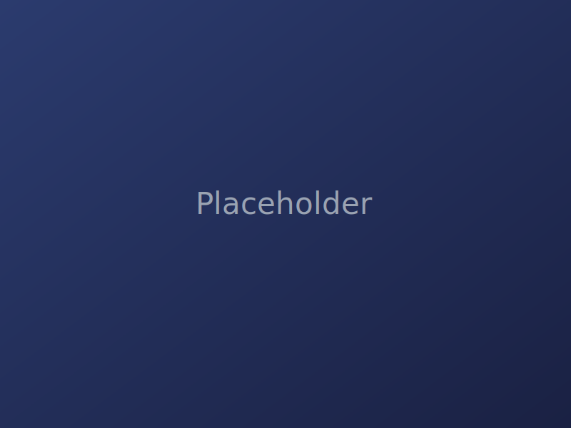

YouTube Videos
For this month I have been working on two YouTube videos: "the entire history of 3d printing, i guess" and "3D Printing every type of gear."
These two videos will involve new video formats to see how viewers respond to them. We are trying to see if our viewers are interested in more educational videos
involving history or informative topics. As a result of different complications, my partner and I have been delayed for a few weeks.

Fence Gate Fix
The gate to my backyard recently broke after the screw threads
securing the lock stripped out completely. I’m now designing and 3D-printing a new plastic locking
mechanism to avoid the alternative: replacing the gate. It's proven to be more difficult than I thought
because of the gate’s uneven ridge. Currently, I am using a zip-tie to hold it up, but it doesn't work that well
so I am designing a 3D-Printed zip-tie with a thick jointed piece.

Motorized Curtain Opener
I’ve always wanted an electronic curtain opener, but the store-bought ones are too expensive.
Even though my dad doesn’t let me modify my room, worried I’ll end up breaking something, I still wanted to experiment.
So I’m building a scaled-down motorized curtain opener using a standard Arduino kit to learn
how the mechanics and control systems work.
P.A.B.S (Pablo's Additive Building Service)
Many students at my school share my passion for 3D printing.
The challenge is that the school’s STEAM department is restrictive about who can access the printers. To help, I’ve been
leveraging my connection with the department to give my classmates more opportunities to print.
What started as my nickname, PABS, has grown into a 3D printing service I run through the school’s resources. My first
project is with Nick Rammos, a ninth grader, and together we’re building a 2–3 foot, 6 kg RC boat model—the Yellowfin 39 Tower.
Since our printers are small, we’re designing the model in modular sections with interlocking slots for assembly.
Once complete, we plan to install an RC motor to bring it to life.
I plan to grow this service enough to act as a hub for local schools as well as pass it down to future printing enthusiasts.